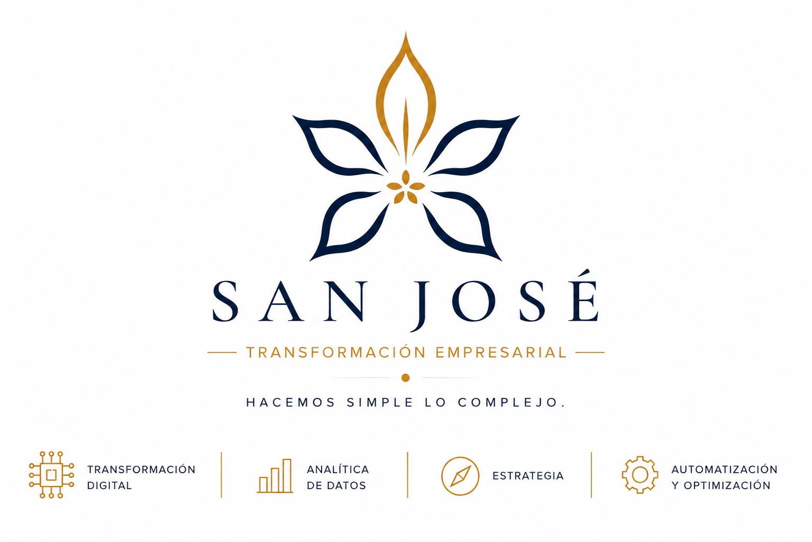

San José analiza la información de tu negocio, identifica qué merece atención y convierte los hallazgos en acciones concretas.
Empieza con tus ventas e inventario. San José revisa la calidad de los datos, identifica prioridades y te explica qué hacer primero y por qué.